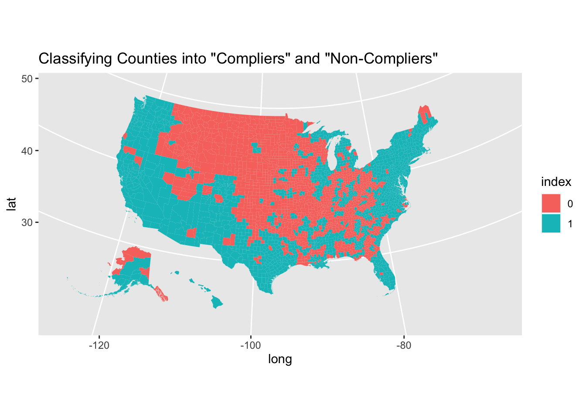
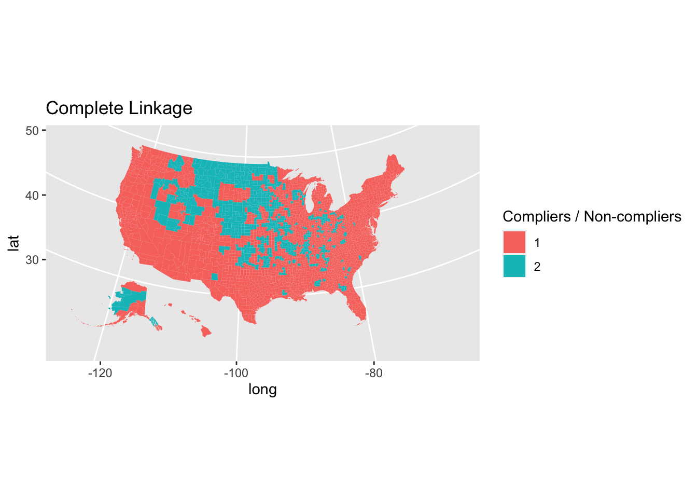
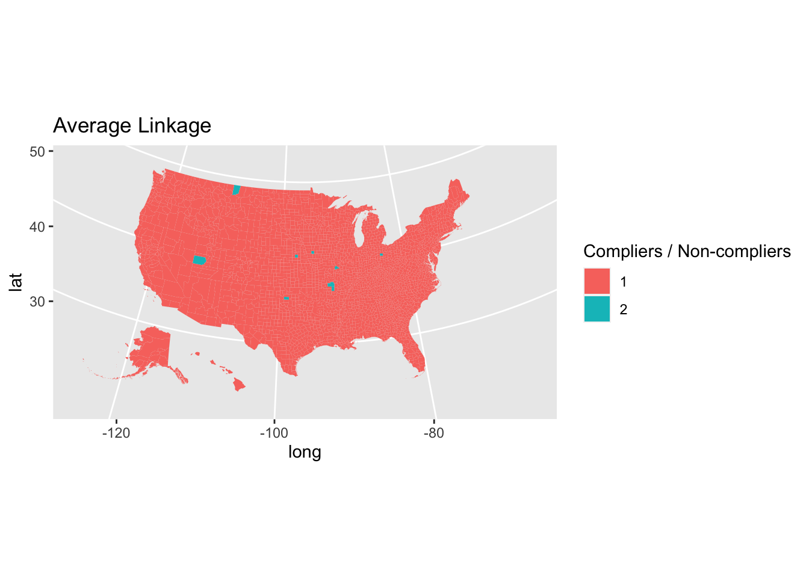
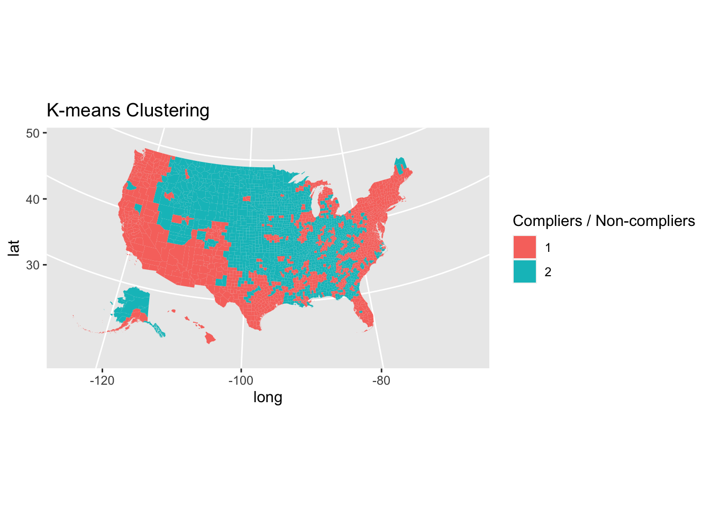
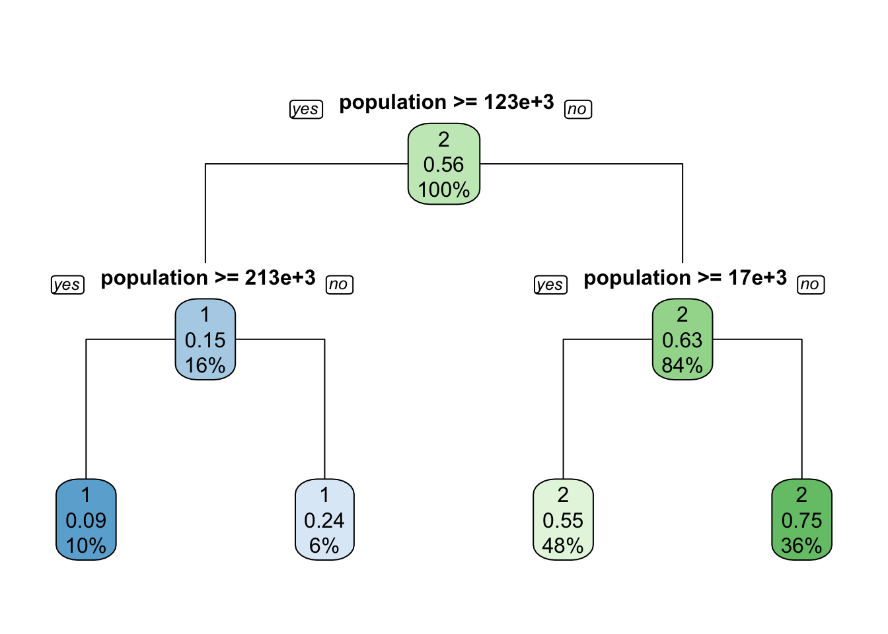

Mask Usage in the US during the COVID Pandemic
Bingling
3/17/2021
Before answering the questions, I would like to highlight that the data used in this document came from New York Times and Dynata.
1. Mask Use by County - Method 1
The probability of an individual wearing a mask was first calculated using the method of weighted average. Then, I set the threshold that determined “compliers” and “non-compliers” at 75% probability.
mask_use <- read_csv("https://raw.githubusercontent.com/nytimes/covid-19-data/master/mask-use/mask-use-by-county.csv")##
## ── Column specification ────────────────────────────────────────────────────────────────────────────────────────────────────
## cols(
## COUNTYFP = col_character(),
## NEVER = col_double(),
## RARELY = col_double(),
## SOMETIMES = col_double(),
## FREQUENTLY = col_double(),
## ALWAYS = col_double()
## )mask_use %>%
mutate(total_prob = NEVER*0 + RARELY*0.25 + SOMETIMES*0.5 + FREQUENTLY*0.75 + ALWAYS*1) %>%
mutate(index = ifelse(total_prob>=0.75, 1, 0)) %>%
mutate(index = as.factor(index))-> mask_use1
urbnmapr::counties %>%
left_join(mask_use1, by = c("county_fips" = "COUNTYFP")) -> mask_use1
ggplot() +
geom_polygon(
mapping = aes(x = long, y = lat, group = group, fill = index),
data = mask_use1
)+
coord_map(projection = "albers", lat0 = 39, lat1 = 45) +
labs(title='Classifying Counties into "Compliers" and "Non-Compliers"')
2. Mask Use by County - Method 2
To calculate the chance of five people wearing masks at a random encounter, I assume each encounter is an independent event, so I multiply the probability of an individual wearing a mask five times.
mask_use1 %>%
mutate(five_encounter = total_prob^5) -> mask_use1
ggplot() +
geom_polygon(
mapping = aes(x = long, y = lat, group = group, fill = five_encounter),
data = mask_use1
)+
scale_fill_gradient(low="white",high="maroon3") +
coord_map(projection = "albers", lat0 = 39, lat1 = 45) +
labs(title="The Chance of Five People Wearing Masks at a Random Encounter")
3. Comparing Method 1 with Method 2
The advantage of Method 1:
The threshold is clear-cut, so it is easy to interpret and present to the public.
The disadvantage of Method 1:
Getting a probability as the threshold can be random or misleading.
The advantage of Method 2:
It better represents the reality because without a clear-cut threshold, it can explain middleground situations. It also makes counties comparable since the probability is continuous.
The disadvantage of Method 2:
Since the computation of the output requires some knowledge in statistics and probabilities, the public may not be able to fully understand how the numbers are calculated.
4. Identify Clusters
The order of the method used in 4 maps goes as the following: single linkage, complete linkage, average linkage, k-means clustering
Among 4 maps, the maps using complete linkage and k-means to create clusters look more balanced and have a similar pattern – counties in the coastal areas are clustered into one group, and counties in the middle areas are clustered into another group. The map using k-means looks most similar to the map that New York Times provided.
In the map using single linkage to create clusters, all counties but one are clustered into one group, which is unrealistic since there are definitely more than one county who complied to mask-wearing. In the map using average linkage to create clusters, all counties but eight are clustered into one group. For the same reason, the two clusters created are not representative of the real situation.
# get rid of COUNTYFP
mask_use %>%
select(NEVER, RARELY, SOMETIMES, FREQUENTLY, ALWAYS) -> mask_use0hc.single=hclust(dist(mask_use0), method="single")
mask_use %>%
mutate(single_linkage = cutree(hc.single, 2)) -> map_single1
urbnmapr::counties %>%
left_join(map_single1, by = c("county_fips" = "COUNTYFP")) -> map_single2
map_single2 %>%
ggplot(aes(long, lat, group = group, fill = factor(single_linkage))) +
geom_polygon(color = NA) +
coord_map(projection = "albers", lat0 = 39, lat1 = 45)+
labs(title="Single Linkage", fill="Compliers / Non-compliers")hc.complete=hclust(dist(mask_use0), method="complete")
mask_use %>%
mutate(complete_linkage = cutree(hc.complete, 2)) -> map_complete1
urbnmapr::counties %>%
left_join(map_complete1, by = c("county_fips" = "COUNTYFP")) -> map_complete2
map_complete2 %>%
ggplot(aes(long, lat, group = group, fill = factor(complete_linkage))) +
geom_polygon(color = NA) +
coord_map(projection = "albers", lat0 = 39, lat1 = 45)+
labs(title="Complete Linkage", fill="Compliers / Non-compliers")
hc.average=hclust(dist(mask_use0), method="average")
mask_use %>%
mutate(average_linkage = cutree(hc.average, 2)) -> map_average1
urbnmapr::counties %>%
left_join(map_average1, by = c("county_fips" = "COUNTYFP")) -> map_average2
map_average2 %>%
ggplot(aes(long, lat, group = group, fill = factor(average_linkage))) +
geom_polygon(color = NA) +
coord_map(projection = "albers", lat0 = 39, lat1 = 45)+
labs(title="Average Linkage", fill="Compliers / Non-compliers")
mask_use %>%
mutate(k_means = kmeans(mask_use0, 2, nstart=20)$cluster) -> map_kmeans1
urbnmapr::counties %>%
left_join(map_kmeans1, by = c("county_fips" = "COUNTYFP")) -> map_kmeans2
map_kmeans2 %>%
ggplot(aes(long, lat, group = group, fill = factor(k_means))) +
geom_polygon(color = NA) +
coord_map(projection = "albers", lat0 = 39, lat1 = 45) +
labs(title="K-means Clustering", fill="Compliers / Non-compliers")
5. The Role of Population in Predicting Mask Use
The variable chosen from ACS was the population in each county. The clustering method I chose was k-means clustering. The dataset was split into train data and test data. Using a decision tree, it was predicted that:
The overall probability of having a non-complier county is 44%.
If the county’s population is less than 124,000, the probability of having a non-complier county is 37%. If the county’s population is less than 17,000, the probability of having a non-complier county is 27%, and if the opulation is more than 17,000 but less than 124,000, the probability of having a non-complier county is 45%.
If the county’s population is more than 124,000, the probability of having a complier county is 84%. If the county’s population is more than 124,000 but less than 227,000, the probability of having a complier county is 73%. If the population is less than 124,000, the probability of having a complier county is 92%.
According to the confusion matrix, the accuracy of prediction of this model is 67.57%, meaning that this model, which is trained using the train dataset, can successfully predict 67.57% of the outcome in the test dataset.
census_api_key("c507a0514a354e5a4a9d73c1a9beeac207f0c807", overwrite = TRUE, install = TRUE)## Your original .Renviron will be backed up and stored in your R HOME directory if needed.## Your API key has been stored in your .Renviron and can be accessed by Sys.getenv("CENSUS_API_KEY").
## To use now, restart R or run `readRenviron("~/.Renviron")`## [1] "c507a0514a354e5a4a9d73c1a9beeac207f0c807"readRenviron("~/.Renviron")
censusdata <- get_acs(geography = "county",
variables = c(population = "B01003_001"),
year = 2019)## Getting data from the 2015-2019 5-year ACScensusdata %>%
separate(NAME, into = c("county","state"), sep = ",") %>%
select(GEOID, county, state, estimate) %>%
mutate(population_percent = estimate/sum(estimate)) %>%
rename(population = estimate) %>%
left_join(map_kmeans1, by = c("GEOID" = "COUNTYFP")) %>%
rename(fips = GEOID) %>%
drop_na() -> acs_dataset.seed(3451)
data_split <- partition(acs_data$k_means, p = c(train = 0.8, test = 0.2))
train <- acs_data[data_split$train, ]
test <- acs_data[data_split$test, ]
model1 <- rpart(
k_means ~ population,
data = train,
method = "class",
control = rpart.control(maxdepth = 2, cp = -1))
rpart.plot(model1, yesno = 2, type = 1)
predict_model1_test <- predict(model1, test, type = 'class')
confusionMatrix(as.factor(predict_model1_test), as.factor(test$k_means))## Confusion Matrix and Statistics
##
## Reference
## Prediction 1 2
## 1 88 22
## 2 190 328
##
## Accuracy : 0.6624
## 95% CI : (0.6239, 0.6994)
## No Information Rate : 0.5573
## P-Value [Acc > NIR] : 5.076e-08
##
## Kappa : 0.2705
##
## Mcnemar's Test P-Value : < 2.2e-16
##
## Sensitivity : 0.3165
## Specificity : 0.9371
## Pos Pred Value : 0.8000
## Neg Pred Value : 0.6332
## Prevalence : 0.4427
## Detection Rate : 0.1401
## Detection Prevalence : 0.1752
## Balanced Accuracy : 0.6268
##
## 'Positive' Class : 1
##